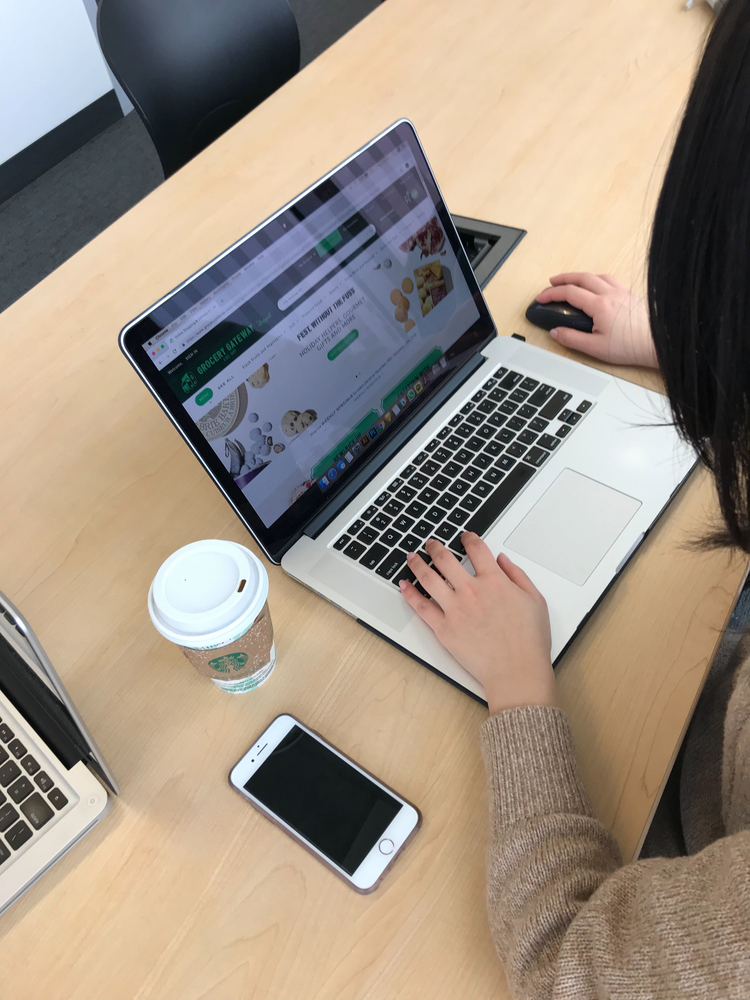
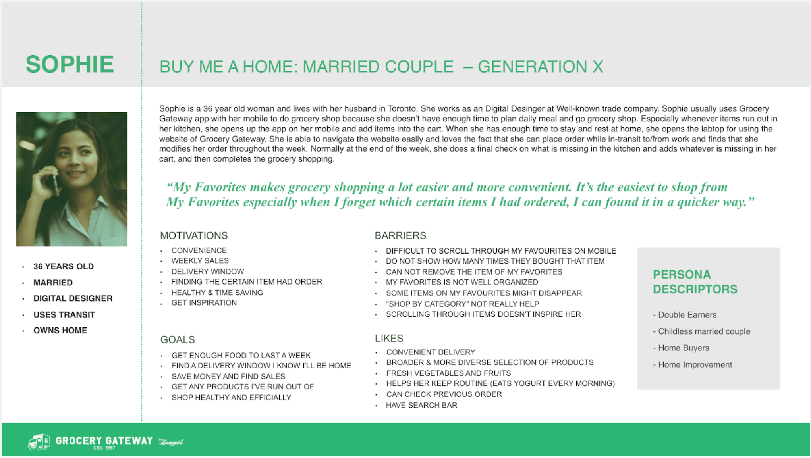
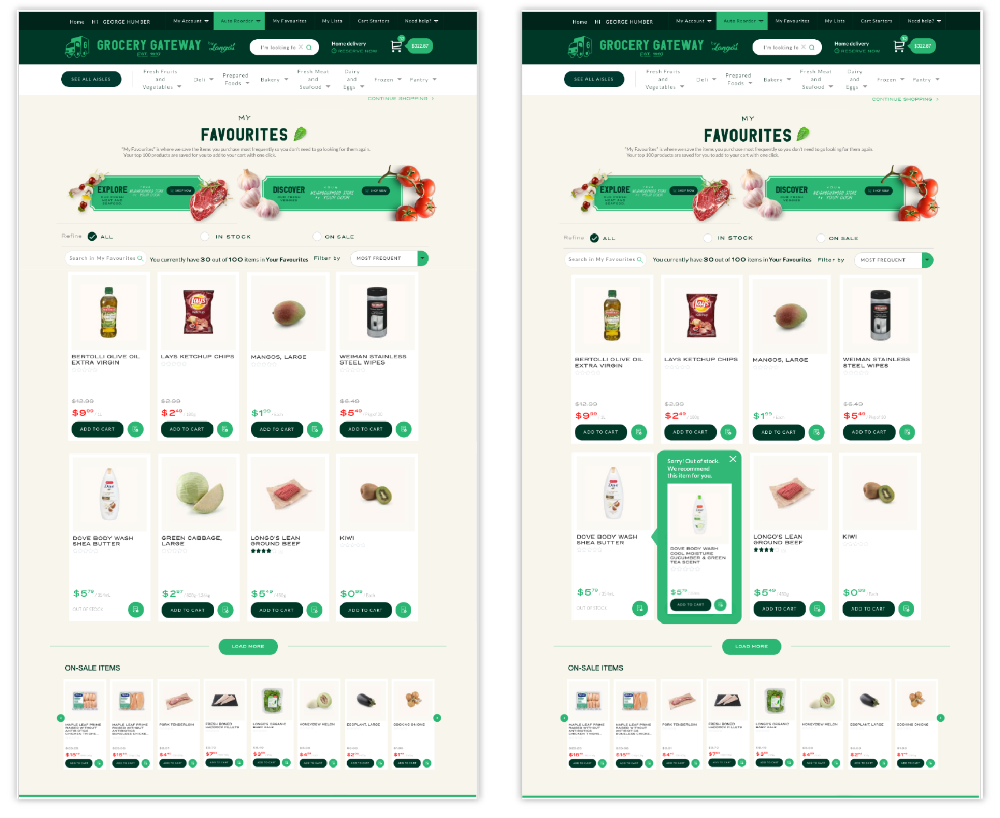
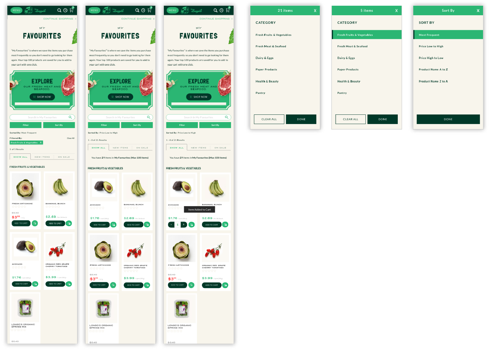
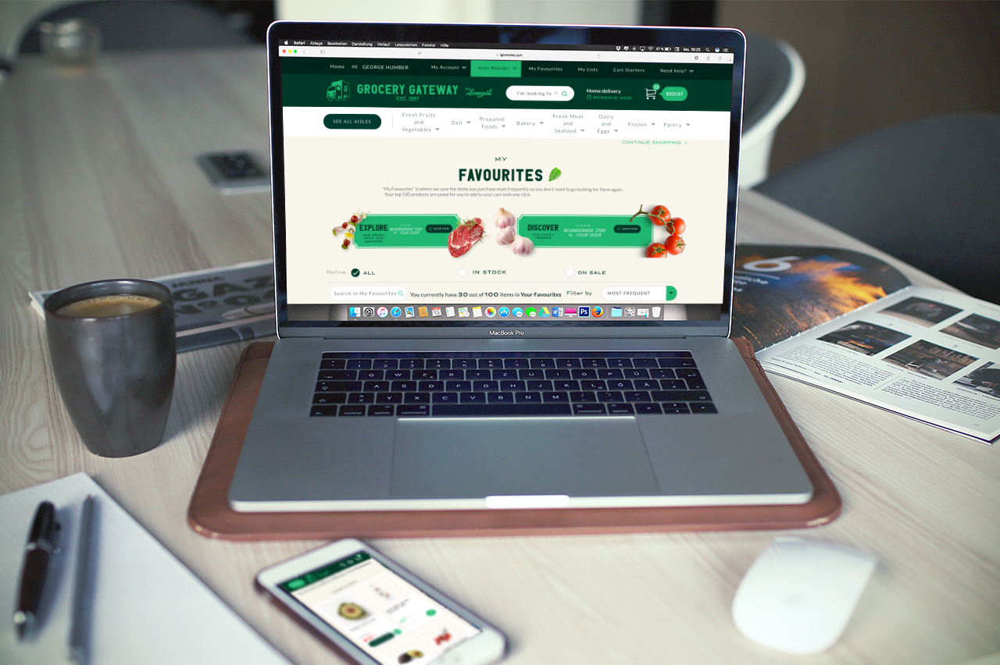

Grocery Gateway
Grocery Gateway是加拿大最大的網路生鮮超市之一，他們細心提供個人化購物服務，用心的送貨團隊將消費者的生鮮蔬果帶到他們的廚房桌子上。
TEAM
Sara Cheng, Jinyun Park, Chih-Ling Kuo
DATE
December 2018
CONTEXT
Grocery Gateway 與Humber College的使用者體驗學系合作。身為系學生的我們幫助此公司促進現有“我的最愛”用戶去瀏覽更多新上架產品。公司期望我們去除現有客戶與新產品之間的隔閡。此外，我們也一併找出APP以及網頁存在的問題，並改進他們成為讓所有用戶更無障礙的使用。
SKILL
User interview
Personas
Task Evaluation
Affinity diagramming
Journey maps
Lo-Hi Fidelity prototype
Formal usability testing
什麼是“我的最愛”?
My Favourites
“我的最愛” 是自動演算出來的產品清單，計算出用戶最常購買的產品，並加他列入“我的最愛”。讓客戶不用費太多精力去找他們常買的固定產品，只需簡單的點擊清單上的物品，即可將它加入購物車中，。最多可為顧客檢視100樣商品。 — Grocery Gateway

The website page of My Favorites section
Problem Definition

Photo by NordWood Themes on Unsplash
The Narrow Sight of My favourites
對於我的最愛用戶來說，他們時常使用此功能購物。然而，他們因此自然地降低了去瀏覽其他在”我的最愛“之外的產品。
為何我們不重新構想”我的最愛“，讓用戶以有效率的方式購物同時他們接觸到新產品以及啟發靈感，從而增加銷量和品牌忠誠度？
PROCESS

Design Process
phase 1:Inspiration
User Interview
在執行訪談的過程中，我們試著讓參與者舒適自在不會緊張。並且提醒自己，我們也絕不能表現出緊張的樣子，我們外在的表現有可能會影響到訪談對象。
Task Evaluation
Task Evaluation 表格是個有幫助的小工具，能幫助你列出測試者的操作的每一步，進一步分析他們遇到的問題。在這個表上，我們必須填入測試者作出的步驟，獨立操作程度，以及執行的時間。在我們完成表格後，測試者的操作流程及遇到的問題將會顯然易見的浮出。

Task Evaluation Form

User Interview
phase 2:Synthesis
Persona
A persona is a representation of a type of customer. Personas answer the question, “Who are we designing for?” and they help to align strategy and goals to specific user groups.— Gregg Bernstein

Persona

User Interview Insights
標記出使用者訪談中的見解
在訪談過後，我們將錄音內容超寫成文字檔，爾後，我們使用了八種標籤幫助我們去分類整理我們的文字檔。我們分別在便利貼上寫下一段段使用者的答覆，然後將相同類型，可套用同個標籤的內容集中在一起。並排列整齊地貼在牆上，如同圖片所示。
Affinity Diagramming
給予標籤分類後，我們得到了一些訪談的見解。但這還不是終點，我們寫下這些見解，使用Affinity Diagram手法更深入的抽絲剝繭。
我們相將有關聯信的見解集結成一個群組，最後，我們分出三個群組類別。分別為，使用者本身，我的最愛功能，以及整體於Grocery Gateway的消費體驗。
在使用者本身類別，這些見解皆是與使用者本人的個人生活習慣相關，例如：她平常都做什麼，她與誰有互動受誰的影響，以及她如何改變自己的消費行為。
在我的最愛功能類別，這些見解來自使用者如何使用我的最愛，她遇到什挫折或是哪裏有達到她的期望。
而整體於Grocery Gateway的消費體驗類別中，沒錯，此類別的見解即是她整體使用Grocery Gateway的網站及APP服務的感受，例如：使用蔬果章節找尋她要的食材，查詢上次的購物車等等。

Affinity Diagram
Executive Research Summary

在此附上我們整理出的十大重要見解，使用者主要不滿意“我的最愛功能”無法依照個人喜好安排順去或分類，其中不能刪除物品也是她的痛點之一。使用者告訴我們，她以前有養貓，因此時常購買貓糧，但貓咪年紀大去世之後，她每次看到“我的最愛”裡有貓糧，都會讓她想到失去愛貓的痛。
我聽到她這麼說之後，我更覺得使用者訪談是多麽的重要，如果沒有她提到，我自己確實不會馬上想到不能自行刪除我的最愛物品會是很大的問題。最後我們列出改善“我的最愛”的建議，以及改善整體Grocery Gateway網站及App介面的建議。
phase 3:Ideation
Customer Journey Mapping
Customer Journey Map
A customer journey map is a story designed to provide insights into the customer’s journey. It is not designed to represent a 100% real experience with all its nuances.— Paul Boag
Journey Map是使用者旅程地圖，我們模擬使用者購物的流程，並揣測他們當下遇到什麼樣的觸碰點，而導致他的心情高低起伏以及影響他要做的決策。
Wireframe
在上色之前，先做出Wireframe，以快速檢查流程使用上是否合適。

Wireframe My faviourites section of the mobile App
Phase 4: Prototyping
Digital Prototyping

確定Wireframe的使用流程沒問題後，我們做出高保真的原型。歡迎點擊影片觀看原型設計。
Prototyping of Mobile APP

Prototyping of website
Formal Usabilty Testing

我們使用Tobii Eyetracking 系統執行正式的可用性測試。並擬定App版及網頁版各三種Task題目讓使用者進行測試。
Reiterate Design

經過使用者測試後，我們發現還有待改善的地方，因此執行原型重新設計。
Redesign Prototype of Mobile APP

Redesign Prototype of Website
Next Steps
Formal usabilty testing with more users
Reiterate
Final render
Reflections
